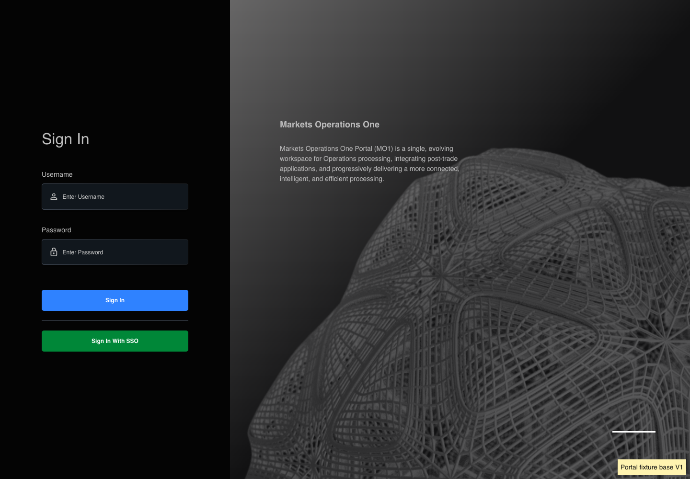
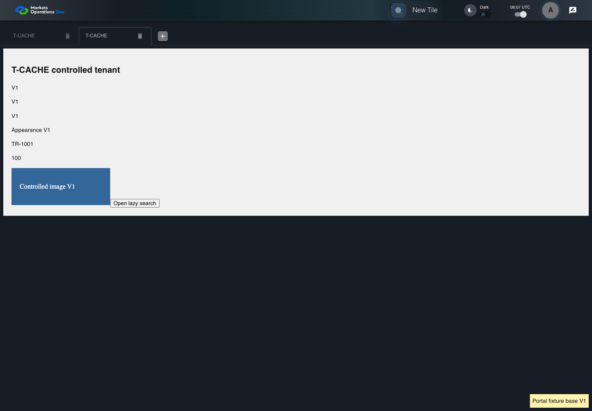

KNOW-046 real HTTP cache and controlled tenant lifecycle
FAIL · application/run-050/know-046-real-http-cache-and-controlled-tenant-lifecycle-f00789795eb6-attempt-1 · ACTUAL_APPLICATION_LOCAL_SERVICES
Actual current React shell and real Chromium HTTP cache. Local HTTP fixture server supplies synthetic Alice, permissions, base entry wrapper, container, tile, trade, lazy content, CSS and images. V1/V2 markers identify controlled fixture assets. No browser routing, production CDN, real business tenant, or changed base binary acceptance.
2026-10-22T06:07:03.378Z to 2026-10-22T06:07:14.969Z
Assertions and result · Artifact manifest · Exact run inputs and source hashes
Result SHA-256:bf7c84a8306867024a49e668b6081abf83d0567dd1cfeb5b58412b6705708da4Retained failure details
[
{
"message": "Error: \u001b[2mexpect(\u001b[22m\u001b[31mlocator\u001b[39m\u001b[2m).\u001b[22mtoHaveText\u001b[2m(\u001b[22m\u001b[32mexpected\u001b[39m\u001b[2m)\u001b[22m failed\n\nLocator: getByRole('tabpanel').visible().getByTestId('cache-tile-version')\nExpected: \u001b[32m\"V\u001b[7m2\u001b[27m\"\u001b[39m\nReceived: \u001b[31m\"V\u001b[7m1\u001b[27m\"\u001b[39m\nTimeout: 5000ms\n\nCall log:\n\u001b[2m - Expect \"toHaveText\" getByRole('tabpanel').visible().getByTestId('cache-tile-version') with timeout 5000ms\u001b[22m\n\u001b[2m - waiting for getByRole('tabpanel').visible().getByTestId('cache-tile-version')\u001b[22m\n\u001b[2m 9 \u00d7 locator resolved to <p data-testid=\"cache-tile-version\">V1</p>\u001b[22m\n\u001b[2m - unexpected value \"V1\"\u001b[22m\n",
"stack": "Error: \u001b[2mexpect(\u001b[22m\u001b[31mlocator\u001b[39m\u001b[2m).\u001b[22mtoHaveText\u001b[2m(\u001b[22m\u001b[32mexpected\u001b[39m\u001b[2m)\u001b[22m failed\n\nLocator: getByRole('tabpanel').visible().getByTestId('cache-tile-version')\nExpected: \u001b[32m\"V\u001b[7m2\u001b[27m\"\u001b[39m\nReceived: \u001b[31m\"V\u001b[7m1\u001b[27m\"\u001b[39m\nTimeout: 5000ms\n\nCall log:\n\u001b[2m - Expect \"toHaveText\" getByRole('tabpanel').visible().getByTestId('cache-tile-version') with timeout 5000ms\u001b[22m\n\u001b[2m - waiting for getByRole('tabpanel').visible().getByTestId('cache-tile-version')\u001b[22m\n\u001b[2m 9 \u00d7 locator resolved to <p data-testid=\"cache-tile-version\">V1</p>\u001b[22m\n\u001b[2m - unexpected value \"V1\"\u001b[22m\n\n at /Users/lushevol/code/github/ratan-release-impact/workbench/e2e/audit-specs/cache-lifecycle.spec.ts:79:72\n at AuditCapture.step (/Users/lushevol/code/github/ratan-release-impact/workbench/e2e/support/audit-fixture.ts:94:21)\n at /Users/lushevol/code/github/ratan-release-impact/workbench/e2e/audit-specs/cache-lifecycle.spec.ts:79:9",
"location": {
"file": "/Users/lushevol/code/github/ratan-release-impact/workbench/e2e/audit-specs/cache-lifecycle.spec.ts",
"column": 72,
"line": 79
},
"snippet": " 77 | await audit.step(13, drawerVisible);\n 78 | await audit.step(14, () => app.openTile());\n> 79 | await audit.step(15, async () => { await expect(tileVersion()).toHaveText('V2'); });\n | ^\n 80 | await audit.step(16, () => noActiveVersion('V1'));\n 81 | } else if (id === 'KNOW-047') {\n 82 | await audit.step(3, async () => {"
}
]Machine observations
- cache-fixture-scope.json
eb09332500a1bdeb2a3c57060fc3a8b8dd4ba6950e717425d87477d012bf526a - catalog-permission.json
d8d7e0f38ee1963900ea5028c160f94efa40eaf9e8e193ffc1556bf8febe8421 - http-cache-observations.json
44ae489ecd0445f81cfabd17d4da9d3db8619fffbf3858e93d0fe86a42af1288
Screenshot capture: CAPTURED. Named frames: 16.
Step screenshot evidence: INCOMPLETE. 15/16 canonical steps have execution screenshots.
Step 16 has no screenshot from an executed step.
Canonical step timeline
Given Alice uses an isolated browser profile with the synthetic identity and permissions defined for this case
Execution: PASSED.
1. step-01 Visible state after step 1: Given Alice uses an isolated browser profile with the synthetic identity and permissions defined for this case
2026-10-22T06:07:05.128Z · 1440×1000
Step: /Users/lushevol/code/github/ratan-release-impact/workbench/tasks/ui-test-coverage-20261022/test-cases.md:12063
SHA-256:e073a145e20d9367b1e52935b861d3caa20dc309ef8375a6848ae59cfbff4262And Alice has catalog permission for the synthetic tile with exact title "T-CACHE"
Execution: PASSED.
2. step-02 Visible state after step 2: And Alice has catalog permission for the synthetic tile with exact title "T-CACHE"
2026-10-22T06:07:05.224Z · 1440×1000
Step: /Users/lushevol/code/github/ratan-release-impact/workbench/tasks/ui-test-coverage-20261022/test-cases.md:12064
SHA-256:e073a145e20d9367b1e52935b861d3caa20dc309ef8375a6848ae59cfbff4262And Alice has completed opening T-CACHE V1
Execution: PASSED.
3. step-03 Visible state after step 3: And Alice has completed opening T-CACHE V1
2026-10-22T06:07:05.668Z · 1440×1000
Step: /Users/lushevol/code/github/ratan-release-impact/workbench/tasks/ui-test-coverage-20261022/test-cases.md:12065
SHA-256:c9068abec5542286d76bb1f9ab2201d46631a39536d27effdad28b5746e2c7fbAnd The controlled server now serves the complete T-CACHE V2 build
Execution: PASSED.4. step-04 Visible state after step 4: And The controlled server now serves the complete T-CACHE V2 build
2026-10-22T06:07:05.747Z · 1440×1000
Step: /Users/lushevol/code/github/ratan-release-impact/workbench/tasks/ui-test-coverage-20261022/test-cases.md:12066
SHA-256:c9068abec5542286d76bb1f9ab2201d46631a39536d27effdad28b5746e2c7fbAnd the controlled login deployment enables the local Username and Password form
Execution: PASSED.5. step-05 Visible state after step 5: And the controlled login deployment enables the local Username and Password form
2026-10-22T06:07:05.830Z · 1440×1000
Step: /Users/lushevol/code/github/ratan-release-impact/workbench/tasks/ui-test-coverage-20261022/test-cases.md:12067
SHA-256:4bf066c1df8a3e53d9487fa3473cf37fcbc6c8092bc3a7523470dcd89c165102When Alice clicks the icon button with tooltip "User Profiles" in the portal application bar
Execution: PASSED.6. step-06 Visible state after step 6: When Alice clicks the icon button with tooltip "User Profiles" in the portal application bar
2026-10-22T06:07:05.975Z · 1440×1000
Step: /Users/lushevol/code/github/ratan-release-impact/workbench/tasks/ui-test-coverage-20261022/test-cases.md:12068
SHA-256:e97cdad3568d0cb31cf92c9f0f2061f374d5f5b31a16819126a2bbafb4d50c5fAnd Alice clicks the menu item labeled "Logout" in the user profile menu
Execution: PASSED.7. step-07 Visible state after step 7: And Alice clicks the menu item labeled "Logout" in the user profile menu
2026-10-22T06:07:06.144Z · 1440×1000
Step: /Users/lushevol/code/github/ratan-release-impact/workbench/tasks/ui-test-coverage-20261022/test-cases.md:12069
SHA-256:ab6c6a9ba49a242776a22c31a9ae16992b40dfc2fae572378f744aff0e6fcd03And Alice clicks the button labeled "Logout" in dialog "Leave Now?"
Execution: PASSED.
8. step-08 Visible state after step 8: And Alice clicks the button labeled "Logout" in dialog "Leave Now?"
2026-10-22T06:07:07.869Z · 1440×1000
Step: /Users/lushevol/code/github/ratan-release-impact/workbench/tasks/ui-test-coverage-20261022/test-cases.md:12070
SHA-256:c8e5c3fb296703e961372c0eea7bc58376a43d12faccd81c90047dc058e032e3And Alice fills the textbox with placeholder "Enter Username" with "alice" on the Sign In page
Execution: PASSED.9. step-09 Visible state after step 9: And Alice fills the textbox with placeholder "Enter Username" with "alice" on the Sign In page
2026-10-22T06:07:08.218Z · 1440×1000
Step: /Users/lushevol/code/github/ratan-release-impact/workbench/tasks/ui-test-coverage-20261022/test-cases.md:12071
SHA-256:dd3ebce36f1d3cc9b3571c33e095bdfd56a8c6af157dc8da08e56a968f92fcd5And Alice fills the text input with placeholder "Enter Password" with the fixture password on the Sign In page
Execution: PASSED.10. step-10 Visible state after step 10: And Alice fills the text input with placeholder "Enter Password" with the fixture password on the Sign In page
2026-10-22T06:07:08.564Z · 1440×1000
Step: /Users/lushevol/code/github/ratan-release-impact/workbench/tasks/ui-test-coverage-20261022/test-cases.md:12072
SHA-256:14738edfd36d4bfb2897f06594dc93f582ed2e4d0c0cd0683e2e5039c24e6afbAnd Alice clicks the button labeled "Sign In" on the Sign In page
Execution: PASSED.11. step-11 Visible state after step 11: And Alice clicks the button labeled "Sign In" on the Sign In page
2026-10-22T06:07:08.794Z · 1440×1000
Step: /Users/lushevol/code/github/ratan-release-impact/workbench/tasks/ui-test-coverage-20261022/test-cases.md:12073
SHA-256:57cb07bde23158705df60ee63f4b8f03c474f5775ce7fe4962fa6fecddc316e9And Alice clicks the text "New Tile" on the portal workspace page
Execution: PASSED.12. step-12 Visible state after step 12: And Alice clicks the text "New Tile" on the portal workspace page
2026-10-22T06:07:08.969Z · 1440×1000
Step: /Users/lushevol/code/github/ratan-release-impact/workbench/tasks/ui-test-coverage-20261022/test-cases.md:12074
SHA-256:5c234d4fefe882032ff74aec6f251dbfa289bf3d1bb1cc3f42aac4ef7fe79755Then the drawer panel headed by "Tile Options" is visible on the portal workspace page
Execution: PASSED.
13. step-13 Visible state after step 13: Then the drawer panel headed by "Tile Options" is visible on the portal workspace page
2026-10-22T06:07:09.087Z · 1440×1000
Step: /Users/lushevol/code/github/ratan-release-impact/workbench/tasks/ui-test-coverage-20261022/test-cases.md:12075
SHA-256:5c234d4fefe882032ff74aec6f251dbfa289bf3d1bb1cc3f42aac4ef7fe79755When Alice clicks the text "T-CACHE" in the drawer panel headed by "Tile Options"
Execution: PASSED.14. step-14 Visible state after step 14: When Alice clicks the text "T-CACHE" in the drawer panel headed by "Tile Options"
2026-10-22T06:07:09.258Z · 1440×1000
Step: /Users/lushevol/code/github/ratan-release-impact/workbench/tasks/ui-test-coverage-20261022/test-cases.md:12076
SHA-256:c852024abc979761bd053a7dc03ba23d71fab223ebf06717905798e6949ccc67Then The T-CACHE fixture displays tile-version marker "V2"
Execution: FAILED.
15. step-15-failure Visible state when step 15 failed. Later steps did not execute.
2026-10-22T06:07:14.334Z · 1440×1000
Step: /Users/lushevol/code/github/ratan-release-impact/workbench/tasks/ui-test-coverage-20261022/test-cases.md:12077
SHA-256:0520f57b4b366f135ca5d3881dc6b1298a71e40bd1fc8fc30870737ddb278234And No active T-CACHE content displays a tile-version marker "V1"
Execution: NOT_EXECUTED.No screenshot is recorded for this step. No executed state is claimed.
Additional named frames

The visible state when the test failed.
2026-10-22T06:07:14.415Z · 1440×1000Step: Test source: /Users/lushevol/code/github/ratan-release-impact/workbench/e2e/audit-specs/cache-lifecycle.spec.ts:14
SHA-256:
0520f57b4b366f135ca5d3881dc6b1298a71e40bd1fc8fc30870737ddb278234Screenshots establish visible state only. Assertions and traces support functional claims.